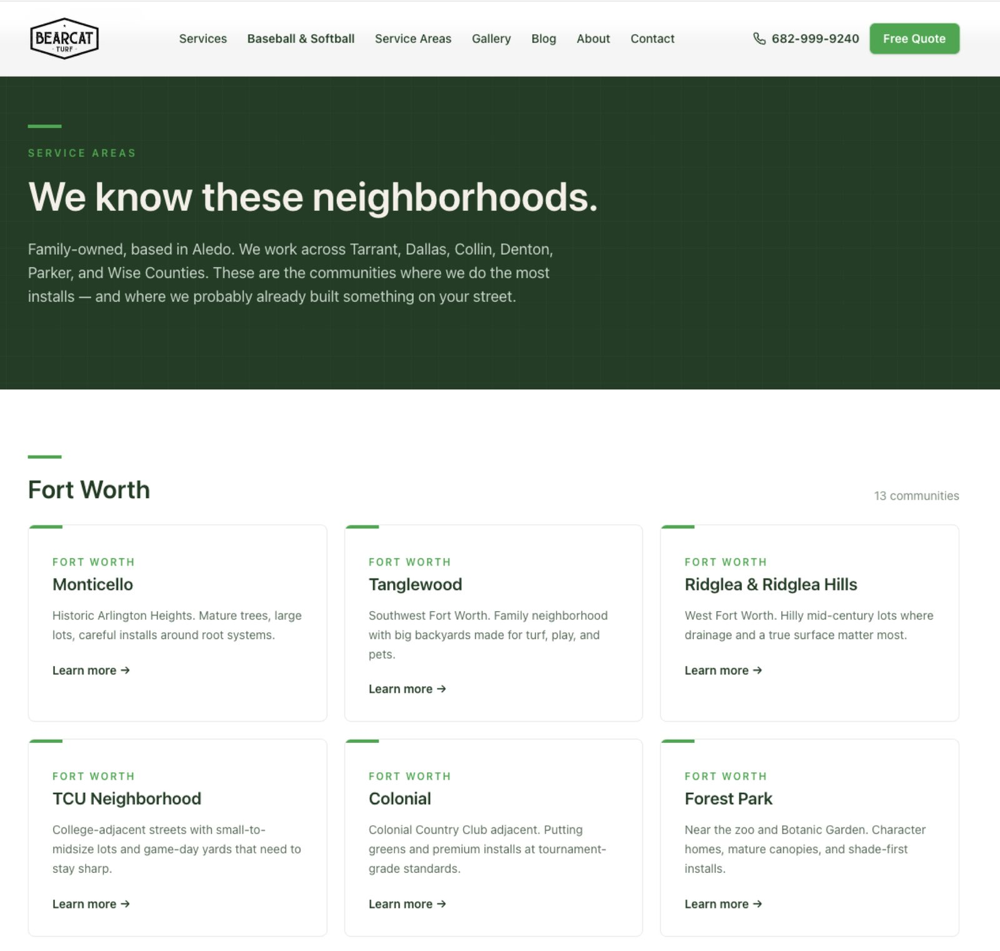
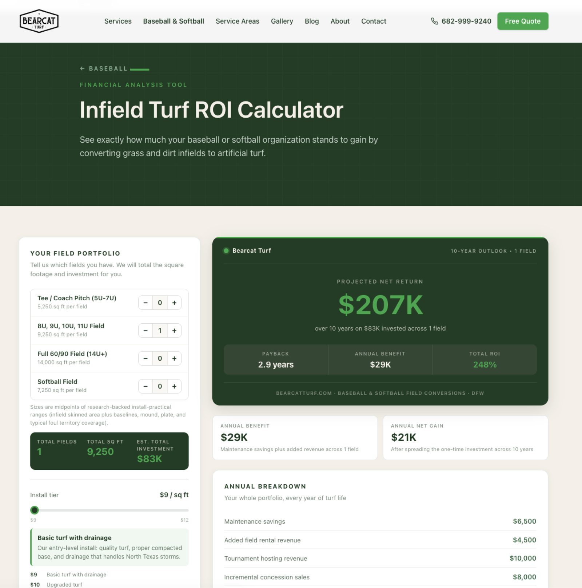
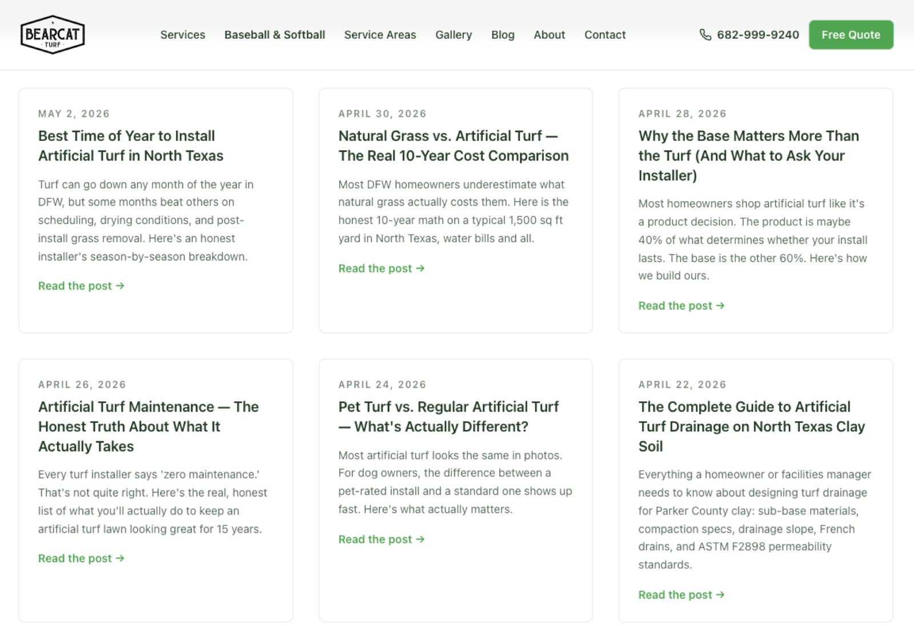

Bearcat Turf
Competing with national brands on a family-owned budget — a 136-page custom site, 44 hyper-local SEO pages, and server-side conversion tracking that recovers 30–40% of lost ad signal.

A two-person shop competing with six-figure SEO budgets.
Bearcat Turf is a family-owned artificial turf installer in Aledo, Texas. When Lindsey and Colin Burns started the business in 2023, they were competing against national franchise brands spending six figures a year on paid search and content — companies with dedicated SEO teams, generic landing pages for every Texas city, and aggressive PR campaigns.
The family operator's disadvantage was structural:
- No SEO infrastructure. A generic Squarespace site with thin content competed directly against installers with dozens of optimized city-specific landing pages.
- No lead capture system. The contact form was a 7-field wall; the only conversion event was a Facebook Pixel page view that Safari and iOS ATT were quietly stripping out.
- No measurement loop. When ads stopped producing, there was no way to know whether the creative, audience, or landing page was the problem.
- Manual ops tax. Every quote request arrived as a raw email. Triage, project routing, and follow-up lived in one person's inbox.
The core question was simple: how does a two-person, Aledo-based business outrank and out-convert multi-market operators on terms like "artificial turf Aledo TX" and "backyard batting cage DFW" — without hiring an agency that costs more than a year of install revenue?
Treat the site as a lead-gen engine — not a brochure.
We built a fully custom site architecture that treats SEO, local authority, and conversion tracking as first-class product features — not plugins layered on top of a template.
- Astro 6 static site generator for lightning-fast, crawler-friendly pages (136 pages, ~2-second total build).
- Cloudflare Workers + Static Assets for global edge delivery, with a dedicated Worker for server-side API logic.
- Tailwind CSS 4 with a locked-in brand system that prevents design drift across dozens of pages.
- Meta Conversions API (CAPI) bridge that mirrors every browser Pixel event server-side with shared event-ID deduplication.
- Content collections (MDX) so the owner can add services by dropping a Markdown file — no code.
- Formspree for submissions, intercepted client-side to fire Meta + GA4 lead events before redirect.
- Git-connected Cloudflare deploys — push to main, live in 90 seconds.
Every technical decision was weighed against one question: "Does this make it more likely a Parker County family books a walkthrough?"
Architecture choices that compound into market position.
44 city-specific landing pages from 4 data files.
Combo pages like /local/pet-turf-walsh are each unique, schema-tagged, and internally linked — without the owner hand-writing 44 pages.
Now ranking for "pet turf Parker County," "Walsh Ranch backyard putting greens," and 40+ long-tail terms competitors haven't touched.Recovers 30–40% of ad signal iOS and Safari kill.
Cloudflare Worker-based CAPI bridge fires Meta events server-side, dedupes against the browser Pixel with shared event IDs, and sends cleaner signal back to Meta.
Lower cost per lead, better lookalike audiences — zero ongoing maintenance.Add an install photo with one commit.
Colin drops a new install photo in gallery/dogs/, pushes to git, and the photo appears on /gallery, /dogs, and the relevant service page — with filter tags, alt text, and schema-ready markup.
No CMS. No admin panel. No $25/month subscription.Add a service in 10 minutes.
Adding "Concrete Pavers," "Pergolas," and "Retaining Walls" was three Markdown files with three frontmatter fields. The services appeared on /services, auto-linked in the footer, and generated schema-tagged detail pages.
All from a single 10-minute commit.A site the size of a SaaS, the speed of a landing page.
The CAPI bridge is a Cloudflare Worker (~100 lines of TypeScript) that receives POSTs from a custom window.btSendEvent() helper, enriches them with server-only fields (cf-connecting-ip, user-agent, event_time), and forwards to graph.facebook.com via ctx.waitUntil() — meaning the browser never waits for Meta's response. A shared event_id lets Meta dedupe so conversions aren't double-counted.
Structured data goes deep. Every page emits LocalBusiness, BreadcrumbList, and (on city pages) a scoped Service JSON-LD block with its own areaServed. FAQ pages emit FAQPage schema with individual Question/Answer entities for rich-snippet eligibility.
Sitemap priority is tuned per URL. Custom serialize() function boosts the homepage to 1.0, primary funnel pages to 0.9, and legal pages to 0.3 — telling Google exactly where to spend its crawl budget.
Service-area schema is per-page. A BaseLayout prop change and a codemod injected serviceAreaCity props into 39 pages — each now emits its own local signal instead of inheriting the site-wide one.
Dual-channel event tracking. window.btSendEvent('Lead', {...}) fires browser Pixel, server CAPI, and GA4 simultaneously with matched IDs. One function, three destinations, zero missed signal.
From digital business card to compounding lead asset.
Every new install photo, blog post, or service-area page extends the moat — and each extension costs the owner minutes, not dollars.
Screenshots.
The project in the wild — UI from the live product.



Outranked by a bigger competitor?
Big-budget SEO is catchable — you just need an architecture that compounds. Tell us who's outranking you and we'll tell you how to flip it.
Talk to Us